返回关系图
CREATE CODEX机械动力 · 物品教学图鉴
740 个物品与方块，每一件都写了「怎么获得、怎么用、参数、常见坑」；配方与官方 Ponder 文本直接取自模组本体，教程正文为本站撰写。
740物品 / 方块
1302配方条目
116官方内置教程
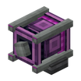
创造马达create:creative_motor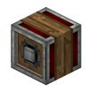
反转齿轮箱create:gearshift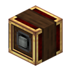
可编程齿轮箱create:sequenced_gearshift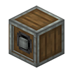
安山传动杆箱create:andesite_encased_shaft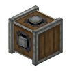
竖直十字齿轮箱create:vertical_gearbox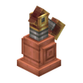
蒸汽引擎create:steam_engine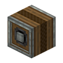
链式传动箱create:encased_chain_drive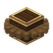
黄铜大齿轮箱create:brass_encased_large_cogwheel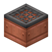
分液池create:item_drain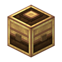
动力合成器create:mechanical_crafter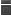
动力活塞头create:mechanical_piston_head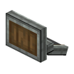
动力犁create:mechanical_plough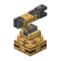
动力臂create:mechanical_arm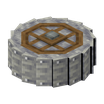
粉碎轮create:crushing_wheel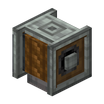
绳索滑轮create:rope_pulley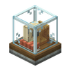
仓储发报机create:stock_ticker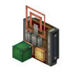
仓储链接站create:stock_link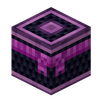
创造板条箱create:creative_crate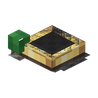
工厂仪表create:factory_gauge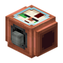
流体阀门create:fluid_valve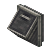
物品舱口create:item_hatch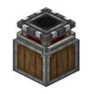
移动式存储接口create:portable_storage_interface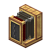
黄铜传送带漏斗create:brass_belt_funnel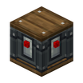
列车信号机create:track_signal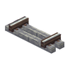
列车轨道create:track列车轨道（半成品）create:incomplete_track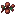
巧克力包层浆果create:chocolate_glazed_berries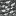
深层锌矿石create:deepslate_zinc_ore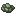
粉碎铀矿石create:crushed_raw_uranium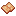
红沙砂纸create:red_sand_paper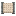
列表过滤器create:filter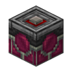
升降机锚点create:elevator_contact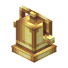
奇异钟create:peculiar_bell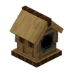
布谷鸟闹钟create:cuckoo_clock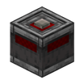
接触式红石信号发生器create:redstone_contact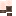
青色辉光管create:cyan_nixie_tube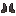
下界合金潜水靴create:netherite_diving_boots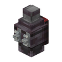
下界合金背罐create:netherite_backtank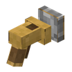
伸缩机械手create:extendo_grip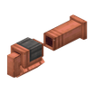
土豆加农炮create:potato_cannon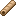
纸棍create:cardboard_sword蓝图create:schematic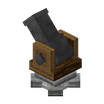
蓝图加农炮create:schematicannon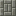
凝灰岩小砖块台阶create:small_tuff_brick_slab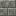
切制凝灰岩砖块create:cut_tuff_bricks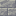
切制安山岩砖块create:cut_andesite_bricks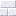
切制方解石砖块台阶create:cut_calcite_brick_slab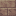
切制滴水石砖块楼梯create:cut_dripstone_brick_stairs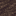
切制熔渣台阶create:cut_scoria_slab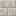
切制石灰岩砖块台阶create:cut_limestone_brick_slab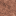
切制花岗岩楼梯create:cut_granite_stairs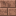
切制花岗岩砖块台阶create:cut_granite_brick_slab